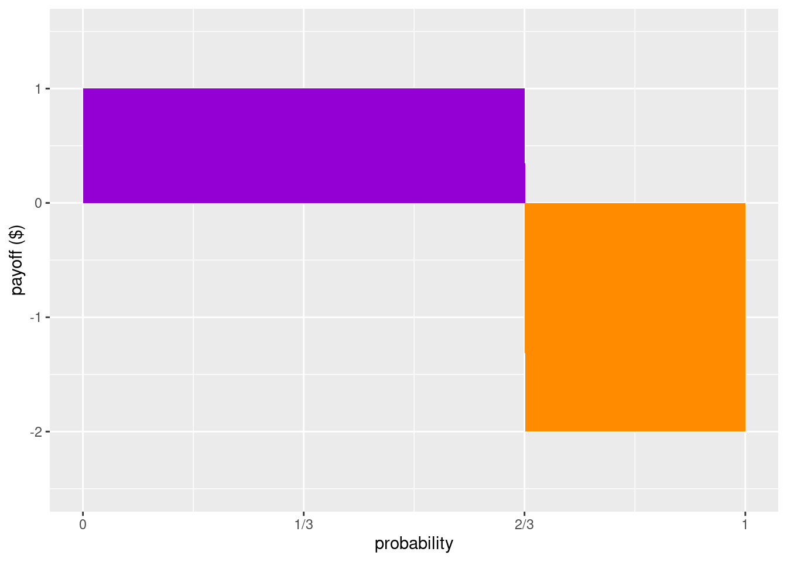
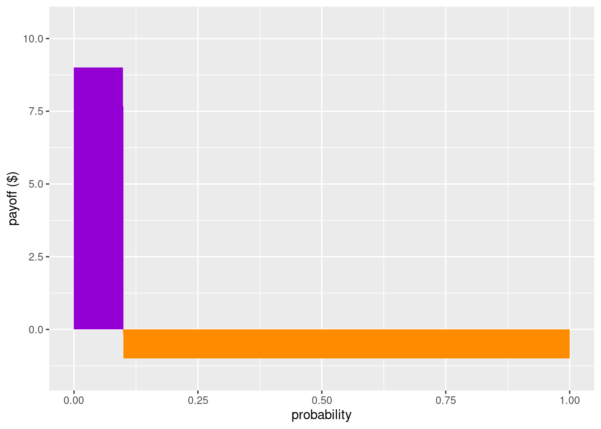

We have come to the point where it will no longer be enough to work with our intuitive notion of probability. If we want to go beyond toy decision problems, like the one’s we’ve been covered, and model decisions that are more like the ones we more frequently face, we’ll need to have a sufficiently robust understanding of probability. For example, one of the main things we’ll want to be able to do is update our beliefs given new information, which effectively amounts to knowing how to update probabilities.
Probabilities are a way of quantifying beliefs. It may seem impossible to measure something as elusive and subjective as beliefs. But some clever conceptual tools have been developed to do just that.
The key idea behind measuring a person’s belief about the world is to figure out how willing they are to risk things that they care about. To illustrate this idea we’re going to momentarily assume that money is our measure of utility.
Here’s a roughly general observation of people’s behaviour: the more confident someone is that some event is going to happen, the more willing they are to bet.
Suppose \(S\) is some event that Bob and Ally care about. The event might be a sports team winning a game, that it’s going to rain tomorrow, that the stock price of some company will be higher by next year, etc.
Let’s say Bob is more than 50% confident that \(S\) will happen. In fact, let’s suppose that Bob would accept a deal that would pay him \(\$1\) if \(S\) happens, but would cost him \(\$2\) if it doesn’t. Let’s say Ally thinks Bob is wrong to be so confident and agrees to take Bob’s bet. In effect, this means that Ally is willing to put \(\$1\) on the table for the chance of winning the \(\$2\) that Bob is willing to put on the table. The stake is the sum of all the money on the table, in this case \(\$1 + \$2 = \$3\). Whoever ends up being right gets to take the stake.79 Careful here. If Ally turns out to win because \(S\) does not happen, she wins the stake (\(\$3\)), but since she contributed \(\$1\) to it the amount she gains is \(\$2\).
Bob’s fair betting rate can be expressed by dividing his potential loss by the stake:
\[ \begin{aligned} \mbox{Betting Rate} &= \frac{\mbox{Potential Loss}}{\mbox{Stake}}\\ &= \frac{\$2}{\$2 + \$1}\\ &= \frac{2}{3}. \end{aligned} \]
Bob’s betting rate is \(2/3\), which is a reflection of how confident he is that \(S\) will happen. And here’s the next move: that’s Bob’s personal probability that \(S\) will happen, i.e. \(Pr_{Bob}(S)=2/3\).
Bob’s fair odds is another way that betting is sometimes talked about. To express Bob’s fair better rate in terms of odds, we take the ratio of potential loss to potential win:
\[ \begin{aligned} \mbox{Odds} &= \mbox{Potential Loss : Potential Win}\\ &= 2:1 \end{aligned} \]
The odds that Bob would accept are another reflection of his degree of confidence. In fact, there is a handy way of linking up our notion of expected value with odds and probabilities.
A fair bet is one in which the expected value is zero. That is, if we weight the potential win by the probability of winning, and we weight the potential loss by the probability of losing, the odds should “cancel out” or “wash out”: \[ (2/3)(\$1) + (1/3)(-\$2) = 0. \]
Here’s a helpful visual way of understanding the idea of a fair bet. Notice first an inverse relationship between probabilities and payoffs when it comes to risks (especially in gambling): events with really high payoffs tend to have low probabilities, and likewise, the more probable an event is the lower the payoffs tend to be. If the amount of probability is like the width of a rectangle, and the payoff (or loss) is like the height of a rectangle, then a fair bet will be one in which the area of a rectangle that represents Bob winning will have the same amount of area that represents Bob lossing.
Figure 8.1: A bet that pays \(\$1\) if Bob wins and costs \(\$2\) if he loses, is fair when the purple and orange regions have equal area: when the probability of winning is \(2/3\).
To be clear, what Bob considers to be a fair bet might change. For example, suppose Bob comes into some information that significantly decreases his confidence that \(S\) will happen. Let’s say his confidence goes all the way down to 10% (i.e. 1/10). Since his confidence went down, he should be willing to risk less, that is, he should be willing to stake much less. How much less? As a fair bet, Bob will want to make sure that the expected value will be 0: \[ (1/10)(\$9) + (9/10)(-\$1) = 0. \] So for Bob to be willing make a bet with Ally give this new information, Ally would need to be willing to put at least \(\$9\) in the stake for Bob’s \(\$1\).
Notice how our visualization using rectangles will change for this new scenario, but the two rectangles will still have the same area.
Figure 8.2: A bet that pays \(\$9\) if Bob wins and costs \(\$1\) if he loses is fair when the probability of winning is \(1/10\).
Here’s a General Recipe for quantifying a person’s probability that a proposition \(S\) is true using the idea of fair bets:
Notice that we have the formula for the fair betting rate again! It’s helpful to memorize this formula so you don’t have to do the derivation each time. But more important than that is knowing that there is a recipe for getting from bets to personal probabilities.
The general recipe we just developed uses the idea of fair bets (or fair odds). The idea here is that a person would be willing to take either side of the bet. Using the language of preferences: the person is indifferent between the two options. What happens if betting rates aren’t fair in the eyes of Bob? In that case Bob would no longer be indifferent, he would want to take one side!
For example, let’s suppose that Bob is confident that \(S\) will happen, say by three to two odds, i.e. \(Pr(S)=3/5\). That means that, from Bob’s perspective, for every \(\$2\) that Ally is willing to put in the stake, he is willing to put in \(\$3\). That is his fair bet.80 Notice: \((3/5)(\$2) + (2/5)(-\$3) = 0\) Now consider two scenarios:
(Scenario 1) Ally is willing to give Bob even odds, i.e., she is willing to put in \(\$3\) for every \(\$3\) that Bob puts in the stake (and as before, if \(S\) happens then Bob wins the stake). So for the same amount that Bob is willing to lose in his fair bet, in this scenario he has the same probability of winning, but now the payoff for winning is higher. From Bob’s perspective, his expected value is a gain: \[ (3/5)(\$3) + (2/5)(-\$3) = 0.6 \] So Ally’s offer would favor Bob and is advantageous (in his eyes).
(Scenario 2) Ally is only willing to put in \(\$1\) for every \(\$3\) that Bob puts in the stake (and as before, if \(S\) happens then Bob wins the stake). So in order to win \(\$2\) from Ally in this scenario, he would have to be willing to lose \(\$6\), which is twice the amount relative to his fair better rate! From Bob’s perspective, his expected value is now a loss: \[ (3/5)(\$1) + (2/5)(-\$3) = -0.6 \] So here Ally’s offer would not be advantageous to Bob.
There’s an important lesson here. Just because a person is willing to take a bet does not mean that they think it’s a fair bet. Like in Scenario 1, Bob is willing to take bets that he perceives as advantageous to him. But in Scenario 2, he would rather be in Ally’s shoes! So when we’re measuring people’s personal probabilities, we have to make sure that the bets that they are willing to take are ones that they think are fair (i.e. the bet, from their perspective, isn’t advantageous or disadvantageous).
There’s complications though. Recall that money doesn’t perfectly track utility, it is at best a very rough estimate. In previous chapters we saw how gaining a dollar is not the same as losing a dollar. Moreover, the utility of gaining/losing a dollar depends on how much you already have.
Another complication is that we’re assuming that Bob is following the expected utility strategy. As we saw in the discussion of paradoxes like the Allais paradox, we have some reason for thinking that people don’t follow it. So our way of measuring personal probability isn’t perfect, but it’s still a significant advancement in measuring something that we initially thought was purely subjective.
But hold on. It’s not a defect of a camera when it won’t take pictures in a dark room. Similarly, if someone isn’t following the expected utility formula, that says something about the person, not the method by which we can measure personal probabilities.
Ought people to behave according to the expected utility formula? According to the laws of probability and some assumptions that connect beliefs with actions: yes we should. The arguments here are known as Dutch Book arguments. Before we get to these arguments, we need to briefly say at least informally what the laws (or axioms) of probability are.
There are three standard axioms of probabilities. I’ll present them informally here.
(Non-negativity) Probabilities can’t be less than zero, i.e., \(P(S)\geq 0\).
(Normality) If we sum up the probabilities of all possible events, we get 1. For example, if all the possible events for tomorrow are Rainy, Cloudy, and Sunny, then the probability that tomorrow is Rainy or Cloudy or Sunny is 1. Another example: if all the possible winners in the race are numbered 1 through 7, then the probability that one of them wins is 1.
(Finite Additivity) For mutually exclusive events, their disjunction is additive. For example, suppose there’s a horse race with four horses: Gumption, Gallifray, Tungsten, and Shadow. If one horse wins, all the others lose (i.e., horse winnings are exclusive events). So, if the probability of Shadow winning is 0.1, and the probably of Tungsten winning is 0.2, then the probability of Shadow or Tungsten winning is 0.3.
When we identify axioms of a theory, we can use those axioms to define other constraints or features of the theory. For example, we can define the probability for the negation of a proposition (i.e. that an event will not occur), \(\neg X\) as: \[ P(\neg X) = 1 - P(X) \] As we’ve seen above, that means that fixing the probability of a proposition automatically fixes the probability of its negation (and vice versa). For example, if \(P(X)=0.7\) then \(P(\neg X)=0.3\).
This is a helpful feature. Suppose, for example, that we have a lottery with 100 tickets. Each ticket is picked out by a proposition, \(X_1, X_2, \ldots, X_{100}\). The probability of wining a given ticket, \(X_i\) is \[ P(X_i)=\frac{1}{100}=0.01 \] Since we have fixed the probability that \(X_i\) is true, this automatically fixes the probability that it is false, or equivalently, that \(\neg X_i\) is true. Formally, \[ P(\neg X_i) = 1-0.01 = 0.99 \]
This next claim builds on some logic that we will get to shortly, but it’s worth making explicit now as it will play a central role in the argument in the next section. Consider the exhaustive disjunction of all mutually exclusive propositions (e.g., we think about ALL the lottery tickets, and the rule is that when you win with ticket \(X_i\) that means the other tickets did not win). This exhaustive and mutually exclusive disjunction will be a tautology. In our lottery example: \[ P(X_1 \vee X_2 \vee \ldots \vee X_{100}) = 1 \]
In short, even if there is more than one event that we’re considering, the probabilities of all events have to sum to 1.81 We’are assuming that the events are mutually exclusive and exhaustive.
The Dutchbook Argument says that you should accept the above three axioms of probability because if you don’t then you allow for the possibility of guaranteed loses of ``fair bets’’ - bets that rationality suggests would not be fair at all, but you would be unable to provide reasons for not accepting them.82 The person that does accept the three axioms of probability can say why the bets are not fair because they violate one or more of the axioms.
The Dutchbook argument can be stated formally, but it’s enough for our purposes to illustrate the argument using the popular example of horse racing. The following table lists all the names of four horses in a race, including the odds and the implied probability of each horse winning. In addition, the table lists the cost of a bet and the corresponding payout if the horse wins.
| Horse | Odds | Implied.Prob | Bet | Payout |
|---|---|---|---|---|
| Gumption | 1:1 | 0.5 | $100 | $100 |
| Gallifray | 3:1 | 0.25 | $50 | $150 |
| Tungsten | 4:1 | 0.2 | $40 | $160 |
| Shadow | 9:1 | 0.1 | $20 | $180 |
| TOTALS | 1.05 | $210 | $200 |
Here’s what to notice from this table. Suppose you’re the bookie and you get one person to bet for each horse. No matter which horse ends up winning, you as the bookie will pay out $200 from the stake (the sum of the bets you received). But if we look at the total that makes up the stake, that total is $210. The means as the bookie you are to make $10 on the race.
In point of fact, this is how real races are typically organized - and this is a way for you to calculate how much is being “skimmed off the top”. For the most part this isn’t really an issue because we’re willing to let some amount of money to go to those who are organizing the event. But let’s put aside those types of considerations and think instead of a set of bets that you and your friends would set up that is regarded as fair, i.e., that there is no way for someone to scheme and guarantee that they win some money. Each of you in the group has the chance of losing or winning and no one is “skimming off the top”.
Looking at the table again with this in mind, which of the probability axioms is being violated? Recall that the probability of the exhaustive and mutually exclusive disjunction of the options should sum to 1, but the total in the above table is 1.05. This is a violation of Normality.
A violation of Normality where the sum of probabilities is larger than 1 is good for a bookie because it guarantees they earn money.
But a violation of Normality where the sum of probabilities is smaller than 1 is bad for the bookie, but good for the gamblers! Suppose, for example, that Shadow withdraws from the race. Now the implied probabilities sum up to 0.95. If now a gambler bets on all the remaining horses (but saves $20 because they don’t bet on Shadow), the gambler is guaranteed to make a profit of $10. As you can imagine, this rarely happens in real life, as bookies are quick to adjust their betting offers to reflect these sorts of changes.
The point of the Dutchbook argument is to get you to appreciate that if you think about probabilities in a way that does not respect the three axioms, you are at risk of being put in a position where you are guaranteed to lose. Of course lots of decisions under uncertainty have the possibility of losing - that’s simply the nature of risk. But those decisions also typically offer the possibilities of gains - that’s why we might be interested in such decisions in the first place. What the Dutchbook argument says is that if you violate any of the three axioms, then included in the decisions you should be willing to accept are decisions where there is a guaranteed loss. It is thought that no coherent account of rationality should find this acceptable. Moreover, such situations are easily avoided by someone who accepts the probability axioms, because the axioms provide them with a reason to reject such decision offers.
If we’re convinced by the Dutchbook argument, which means we agree that we should be striving to think about probabilities as prescribed by the axioms, then this puts serious pressure on the idea that Prospect Theory is a viable approach to capturing a more “human” kind of rationality. Recall that in response to weighting effects, where people treat outcomes with low probabilities differently than outcomes with high probabilities, Prospect Theory proposed a different function to capture how people reason across these contexts. Such a function explicitly deviates from probability theory. Perhaps as a purely descriptive theory that attempts to capture the systematic ways that people go wrong, this is fine. But it would be misleading to think of that account as closer to “human” rationality. After all, we have the capacity to acknowledge the Dutchbook argument. To this extent, at least when we are sober and closer to the better versions of ourselves, we have the capacity to reason according to probability theory.
Examples from gambling help establish connections between probabilities and our levels of confidence through the idea of odds. In many real world applications, however, the probabilities of outcomes are not as neat as they are in the case of gambling. Nevertheless, it is possible to get some approximations; that is a large part of what the field of statistics is about. We will not go into such details here. But it is worth showing how we can connect some of the concepts so far, and motivate by example what will spell out more abstractly in the next chapter.
Let’s use an example where we estimate some probabilities from frequency data, something that has important ties with medicine and epidemiology. In the context of health it is common to represent data in the form of what is called a two by two table (or 2x2 table). The idea is to use the rows to represent “the exposed” options, like smoking or not smoking, or like using a hand cream or not using a hand cream. The columns represent “the diseased” and “not diseased” which in our case is “rash continues” and “rash gets better”.83 In the smoking scenario the columns could be “hypertension’’ and”without hypertension’’ for example.
Here’s an example of what such data might look like. We’re supposing that each cell represents the number of participants in a study that met the pair of conditions. For example, there are 223 subjects that used the hand cream and had the rash get better. There are 107 subjects that didn’t use the hand cream, but the rash got better anyway. In total there are 330 subjects who’s rash got better. The cells under “Rash Continues” is read similarly. Notice that the cell in the most bottom right corner is the total number of subjects in this study: 426.
| Rash Gets Better (R) | Rash Continues (nR) | Total | |
|---|---|---|---|
| Used Cream (C) | 223 | 75 | 298 |
| Didn’t Use (nC) | 107 | 21 | 128 |
| Total | 330 | 96 | 426 |
Suppose we asked what the probability is that someone in our sample used the hand cream.84 Note that this question is restricted to the sample, the subjects that were in the study. If we want to make claims about the larger population (people not in the sample), we’d have to deploy some inferential statistical tools that we have not covered. To calculate that, we would take the total number of people that use the hand cream (298) and divide that number by the total number of subjects (426). This gives us \(298/426=0.6995\) (rounded to four decimal places). Similarly, we can calculate the probability that a subject had their rash continue by taking that number (96) and dividing it by the total number of subjects (426). This gives us \(96/426=0.2254\). The other two probabilities are calculated similarly: take the total from the row or column, and divide by the total number of subjects (426).
The strategy we are deploying in the case of two by two tables has its equivalent in the strategies we are about to discuss using truth tables, and important tool in logic. We turn to that topic next.
| Face | Odds | Implied.Prob | Bet | Payout |
|---|---|---|---|---|
| Heads | 1:3 | X | $12 | Z |
| Tails | 4:1 | Y | $5 | W |
| Face | Odds | Implied.Prob | Bet | Payout |
|---|---|---|---|---|
| Heads | X | 0.4 | $12 | Z |
| Tails | Y | 0.4 | $5 | W |
| Edge | V | 0.2 | $10 | U |